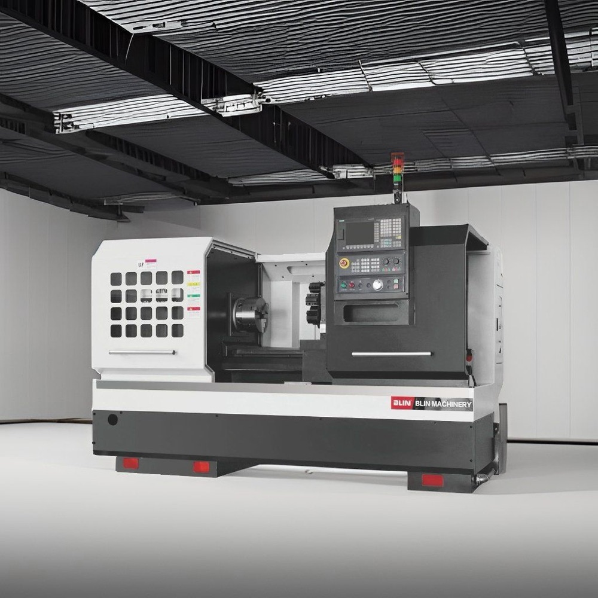

Токарные станки
Для обработки деталей типа тел вращения
Что такое токарный станок
Токарный станок обрабатывает заготовку, которая вращается в шпинделе, а режущий инструмент перемещается вдоль и поперёк оси вращения. Так изготавливают валы, оси, втулки, фланцы, шкивы, резьбовые и конические детали, то есть любые детали, основная поверхность которых образована вращением.
Какие операции выполняют
- Наружное и внутреннее точение
- Подрезка торцов и отрезка
- Нарезание резьбы
- Сверление и растачивание отверстий
- Обработка конусов и профильных поверхностей
Основные типы токарных станков
- Универсальные (с ручным управлением) подходят для единичных и мелкосерийных работ и ремонта.
- Токарные станки с ЧПУ дают повторяемую точность на серийных деталях и позволяют обрабатывать сложный профиль по программе.
- Токарно-фрезерные центры совмещают точение и фрезерование (приводной инструмент, ось C, иногда ось Y), что позволяет делать сложную деталь за одну установку.
- Токарные автоматы, в том числе продольного точения применяют для серийных небольших деталей из прутка.
- Карусельные станки предназначены для крупных тяжёлых деталей большого диаметра, заготовка лежит на горизонтальной планшайбе.
Как выбрать токарный станок
- Размеры заготовок. Наибольший диаметр обработки и длина (расстояние между центрами).
- Шпиндель. Диаметр отверстия (проход прутка), мощность, частота вращения и крутящий момент зависят от материала и размеров деталей.
- Зажим заготовки. Размер и привод патрона, а для работы с прутком ещё и пруткоподатчик.
- Револьверная головка и инструмент. Число позиций и наличие приводного инструмента, если нужны фрезерные и сверлильные операции.
- Задняя бабка и люнет нужны для длинных валов.
- Система ЧПУ. Удобство программирования, обучение и поддержка.
- Жёсткость и точность. Конструкция станины и требования к допускам и шероховатости.
- Автоматизация и стружка. Подача и выгрузка деталей, конвейер стружки, система охлаждения.
- Сервис. Пусконаладка, обучение персонала, наличие запасных частей и гарантийный ремонт.
Расскажите, какие детали вы точите, и мы подберём станок под ваши материалы, размеры и объёмы. Подробнее о наших услугах на странице «Сервис и обслуживание». Критерии выбора разобраны в статье «Как выбрать токарный станок с ЧПУ».
Станки BLIN
BLIN (Ningbo Blin Machinery Co., Ltd.) это китайский производитель металлорежущих станков. В его линейке токарные станки с ЧПУ, в том числе с наклонной станиной, вертикальные токарные станки и другое оборудование для металлообработки.
Токарные станки BLIN применяют там, где нужно обрабатывать валы, оси, втулки, фланцы и другие детали типа тел вращения: от единичных заказов до серийного производства.
Мы подберём модель под ваши детали, материалы и объёмы, организуем поставку, пусконаладку, обучение персонала и сервисное обслуживание.
Модели BLIN
Выберите станок под ваши детали и объёмы

BL-CAK6140 и BL-CAK6150
Экономичные токарные станки с плоской станиной: диаметр над станиной 400 и 500 мм, длина между центрами до 3000 мм.
Подробнее и характеристики
BL-S200
Токарный центр с наклонной станиной: патрон 6″, шпиндель до 5000 об/мин, револьверная головка на 8 или 12 позиций.
Подробнее и характеристикиНе нашли нужный станок?
Напишите или позвоните нам: подберем оборудование под вашу задачу и организуем поставку.